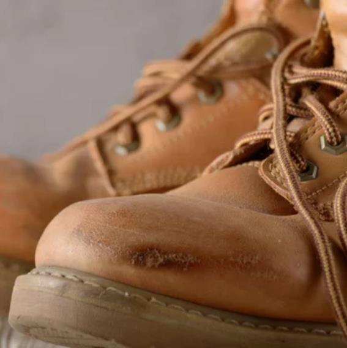
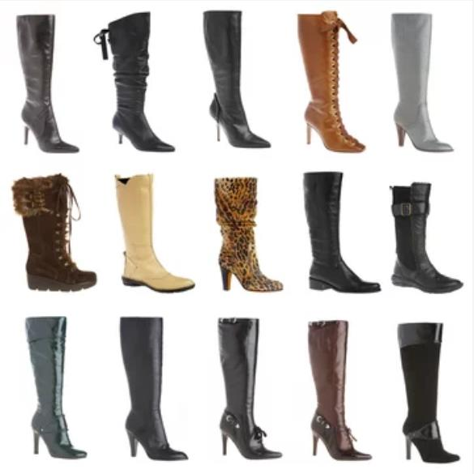
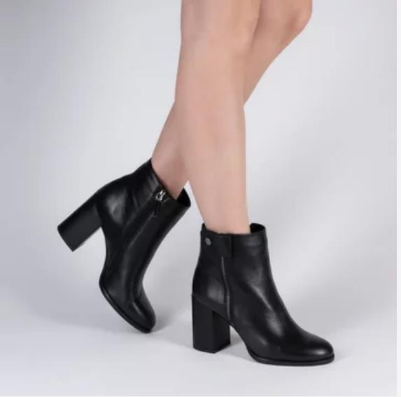

Home
Combos de Baño
Muebles de Baño
Lavamanos
botas
BOTAS

Después de tener un verano bastante caluroso en la mayor parte del país y haber entrado finalmente el otoño, estamos teniendo unos días de muchas lluvias y unas temperaturas más bajas en muchas zonas. En esta estación el clima de este estilo suele ser lo habitual, por lo que una gran cantidad de personas eligen cada año opciones de calzado que son apuestas seguras como botas y botines de muchos tipos, un básico claro del otoño. Al contrario de lo que algunos piensan, elegir calzado cómodo y adaptado a las condiciones meteorológicas no es necesariamente incompatible con ir a la última y seguir las tendencias de la temporada. Hay algunas opciones que consiguen casar con las dos cosas.

Según viene avanzándose desde hace algunos meses, las tendencias de este otoño/ invierno son bastante claras. En las calles veremos muchas botas altas, de agua y de estilo equitación sin llegar a abandonar los botines de tipo militar. Además, también hay hueco para botas y botines tipo cowboy, los metalizados, los zapatos acabados en punta y el calzado tipo colegial con plataformas o tacón. Para empezar a preparar nuestro zapatero con las mejores opciones otoñales, elegiremos muy cuidadosamente nuestro calzado y primaremos siempre los diseños y materiales de calidad.

También muy práctico para el otoño es un formato más alto como este, que además del factor bota militar también combina con la tendencia de las plataformas, algo que nos permitirá ganar unos centímetros más sin que se note. La composición exterior es piel sintética vegana y podremos elegir si la preferimos en negro o en color marrón oscuro.